Introduction
This guide will introduce you to front-end and back-end web technologies. Figure 1 show the different technologies we will be using.
Motivation
The Modern Web
History of the Web (10)
The client-server model (10)
The Browser (10)
Web Server (20)
Tools
Arduino IDE
esptool.py
AWS EC2
AWS IoT
Node.js
mongoDB
To authorize, use this code:
IoT Experiment
Hello World
require 'kittn'
api = Kittn::APIClient.authorize!('meowmeowmeow')
import kittn
api = kittn.authorize('meowmeowmeow')
# With shell, you can just pass the correct header with each request
curl "api_endpoint_here"
-H "Authorization: meowmeowmeow"
Make sure to replace
meowmeowmeowwith your API key.
Kittn uses API keys to allow access to the API. You can register a new Kittn API key at our developer portal.
Kittn expects for the API key to be included in all API requests to the server in a header that looks like the following:
Authorization: meowmeowmeow
Kittens
Get All Kittens
require 'kittn'
api = Kittn::APIClient.authorize!('meowmeowmeow')
api.kittens.get
import kittn
api = kittn.authorize('meowmeowmeow')
api.kittens.get()
curl "http://example.com/api/kittens"
-H "Authorization: meowmeowmeow"
The above command returns JSON structured like this:
[
{
"id": 1,
"name": "Fluffums",
"breed": "calico",
"fluffiness": 6,
"cuteness": 7
},
{
"id": 2,
"name": "Isis",
"breed": "unknown",
"fluffiness": 5,
"cuteness": 10
}
]
This endpoint retrieves all kittens.
HTTP Request
GET http://example.com/api/kittens
Query Parameters
| Parameter | Default | Description |
|---|---|---|
| include_cats | false | If set to true, the result will also include cats. |
| available | true | If set to false, the result will include kittens that have already been adopted. |
Get a Specific Kitten
require 'kittn'
api = Kittn::APIClient.authorize!('meowmeowmeow')
api.kittens.get(2)
import kittn
api = kittn.authorize('meowmeowmeow')
api.kittens.get(2)
curl "http://example.com/api/kittens/2"
-H "Authorization: meowmeowmeow"
The above command returns JSON structured like this:
{
"id": 2,
"name": "Isis",
"breed": "unknown",
"fluffiness": 5,
"cuteness": 10
}
This endpoint retrieves a specific kitten.
HTTP Request
GET http://example.com/kittens/<ID>
URL Parameters
| Parameter | Description |
|---|---|
| ID | The ID of the kitten to retrieve |
IoT Starter Kit
The Kittn API uses the following error codes:
| Part | Image | Description |
|---|---|---|
| 1-Bit Display | 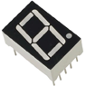 | 7-Segment LED Display |
| 2-Color LED | 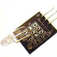 | 2-Color LED. Red when LOW, green (or yellow) when HIGH. |
| 4-Bit Display | 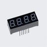 | 4 7-Segment Display in series |
| 7-Color Flash | 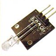 | An LED breakout that automatically flashes 7 different colors when enabled. |
| 8x8 LED Display | 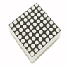 | 8x8 LED Matrix. Controlled using a technique called "Charlieplexing" |
| 1602 LCD Display | 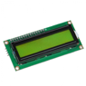 | 1602 LCD Display |
| Active Buzzer | 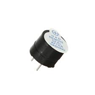 | This buzzer makes a beeping sound when enabled. |
| AdjustableResistor | 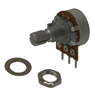 | aka Potentiometer. Indicates position of knob by measuring voltage output. |
| Analog Hall Effect | 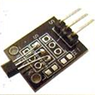 | The voltage output of this sensor varies with intensity of a nearby magnetic field. (Keep strong magnets away from your microcontroller!) |
| Analog Temp | 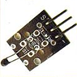 | Output voltage of this analog sensor varies according to temperature. |
| Avoidance | 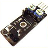 | Thus sensor detects nearby objects that reflect IR light. It emits IR and a receiver onboard detects how much is reflected by objects close by. |
| Ball Switch | 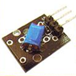 | A ball inside this sensor will touch contacts and complete a circuit when tilted, thereby producing a signal. |
| Ball Switches | 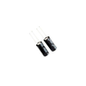 | Ball Switches not mounted on breakout |
| Big Microphone | 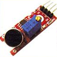 | Larger of 2 digital microphones included in the kit. It has digital and analog outputs. |
| Breadboard |  |
Breadboard |
| Button | 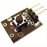 | PushButton on breakout board. This has pull-down resistors onboard. |
| Button Switch | 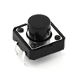 | Pushbutton not on a breakout board. Pull-down resistors not included. |
| Digital Temp | 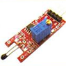 | Digital Temperature Sensor |
| Dupont Cable | 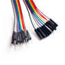 | Jumper wires attached in parallel. Can be peeled apart. |
| Heartbeat | 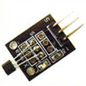 | This sensor shines an IR led at an analog IR Receiver. The receiver can detect a pulse by how much light shines through a user's finger. |
| IR Led | 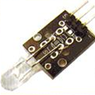 | IR Led |
| IR Phototransistor | 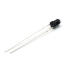 | Transistor enabled by infrared light. |
| IR Receiver | 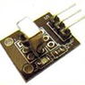 | Analog sensor outputting variable voltage depending on IR intensity. |
| IR Remote | 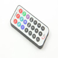 | Remote that pulses IR light at different time intervals. |
| Joystick | 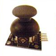 | This sensor has 2 analog outputs indicating position of joystick in 2 axis. |
| Laser Emitter | 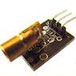 | Laser Emitter |
| LEDs | 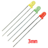 | 3mm LEDs in red, green and yellow. |
| Photo Gate |  |
Detects when a user blocks light from the 2 sides of the sensor. a.k.a Photo interrupter, photodiode or phototransistor |
| Linear Hall | 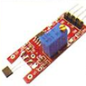 | The output voltage varies with intensity of a nearby magnetic field (keep strong magnets away from your microcontroller!). This breakout also has digital output. |
| LM35 Temperature | 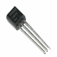 | Analog temperature sensor (that looks like transistor). |
| MCP3008 | 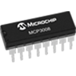 | 8-channel 10-bit analog to digital converter. Interfaces via SPI. |
| Mini Reed Switch | 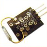 | A switch that opens or closes depending on the presence of a magnetic field. a.k.a Magnetic Relay |
| Motion Sensor | 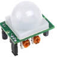 | This is a motion sensor that detects movement by detected changes in IR. It has an analog output. |
| Passive Buzzer | 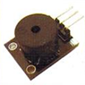 | This buzzer produces sound when given a sound signal. It is mounted on a breakout. |
| Passive Buzzers | 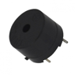 | Passive buzzers not on breakout boards. |
| Photoresistor | 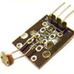 | A resistor breakout that decreases in resistance when under light. Photoresistors alone are also included. |
| Proximity Sensor | 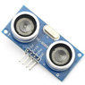 | This sensor detects the proximity of nearby objects by emitting ultrasonic sound wave and measuring the time it takes for them to reflect back. |
| Reed Switch | 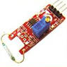 | A switch that opens or closes depending on the presence of a magnetic field. a.k.a Magnetic Relay |
| Relay | 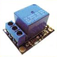 | This can open or close a separate, high-voltage circuit when given the proper input signal. |
| Resistor | 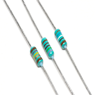 | Blue, 5-band resistors. 220, 1k and 10k ohms. |
| Rotary Encoder | 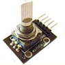 | This is a potentiometer that has continuous rotation and indicates its position with less resolution. It is also on a breakout board. |
| Servo | 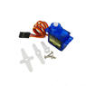 | This sevo has 180 degress of motion. A PWM signal tells it was direction to point and its onboard MCU handles the rest. |
| Shift Register | 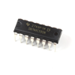 | Texas Instruments Shift Register (useful for controlling 7-segment displays or 8 by 8 LED matrix, among many other things!) |
| Shock Sensor | 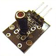 | This sensor is basically a switch that is closed when rapidly moved. Inside is a wire within a spring that, when shaken, contacts the spring and closes a circuit. |
| Small Microphone | 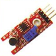 | This is the smaller of 2 digital microphones included in the kit. It has digital and analog outputs. |
| SMD_RGB | 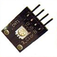 | SMD_RGB is a surface mount led on a breakout board. Like the other RGB LED in the kit, it is controlled via PWM. Some SMD RGBs are controlled with a 24-bit string of data. |
| StepperMotor | 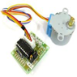 | Stepper motor and driver shield. This stepper motor has a resolution of 4096 steps in a full 360-degree rotation. |
| Tap Module | 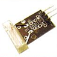 | A spring inside this sensor vibrates when tapped and will hit conductuctors inside, thereby closing a circuit and producing a signal. |
| Temp | 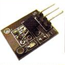 | This is an analog temperature sensor mounted on a breakout board. |
| Temp Humidity | 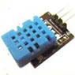 | A DHT11 sensor on a breakout board. No pull-up resistor is necessary. It has an asynchronous, half duplex control on only 1 wire. |
| Touch Sensor | 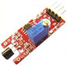 | Touching this sensor temporary allows current to flow through a transistor, creating a signal. |
| Tracking | 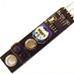 | This is another tracking sensor that only has an analog output. It emits IR light and a receiver detects how much is reflected by objects close by. |
| NodeMCU1.0 | NodeMCU 1.0 WiFi-enabled microcontroller |
IoT Starter Class
Upcoming Classes:
| Date | Details |
|---|---|
| Feb 17-19 2017 | |
| Mar 31-Apr 2 2017 | |
| May 5-7 |